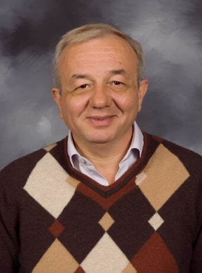

Soner Önder
Prof. Önder leads SCIA. His research sits at the intersection of computer architecture, programming languages, and simulation: instruction-level parallelism, memory dependence prediction and disambiguation, misprediction recovery, single-assignment program representations that double as instruction sets, and the architecture description languages behind the FAST simulator generator. His work has been supported by the NSF since a 2004 CAREER award on future-value-based instruction-level parallelism, and he holds a U.S. patent on ordering instructions using future values.
He received his Ph.D. in Computer Science from the University of Pittsburgh in 1999, and teaches CS 4431 Computer Architecture and CS 5431 Advanced Computer Architecture at Michigan Tech.